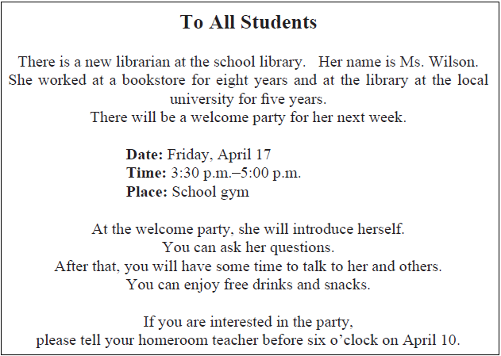
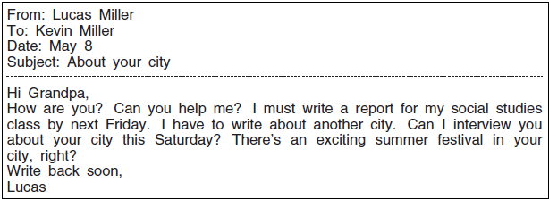
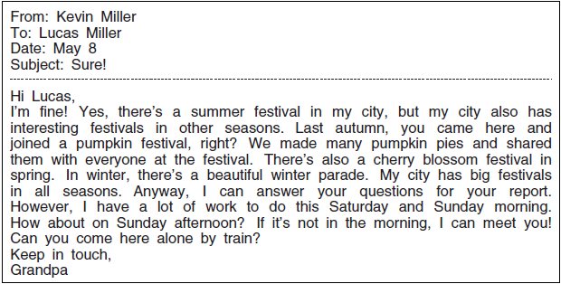
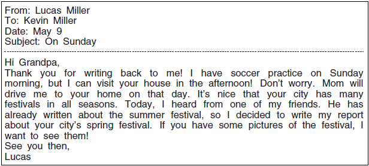
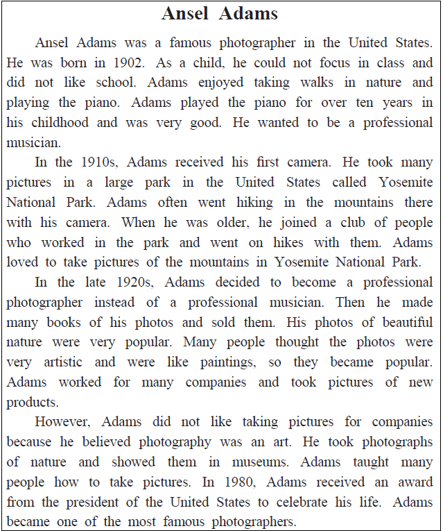

英語検定 ３級(2025年第3回No.3) 残り時間が0になると、自動的に採点します。 時間内に終了する場合は、一番下の「採点する」のボタンを押してください。 残り時間： 分 秒 No 英語検定３級筆記(2025年第3回) 3A 次の掲示の内容に関して、(21)と(22)の質問に対する答えとして 最も適切なもの、または文を完成させるのに最も適切なものを、 解答欄の1～4の中から一つ選びなさい。  No21 How long did Ms. Wilson work at the local university’s library? 1 For five years. 2 For six years. 3 For eight years. 4 For ten years. 答え： 1 2 3 4 No22 At the welcome party, students can 1 or 2 or 3 or 4 1 meet many people from a foreign university. 2 enjoy drinks and food for free. 3 play sports in the gym. 4 watch a new movie. 答え： 1 2 3 4 3B 次のEメールの内容に関して、(23)から(25)までの質問に対する答えとして最も適切なもの、 または文を完成させるのに最も適切なものを、解答欄の1～4の中から一つ選びなさい。    No23 Why did Lucas write to his grandfather? 1 To share the news about Lucas’s city. 2 To ask about interviewing his grandfather. 3 To invite his grandfather to a soccer game. 4 To ask about making pumpkin pies. 答え： 1 2 3 4 No24 When will Lucas’s grandfather be able to meet Lucas? 1 On Friday afternoon. 2 On Saturday morning. 3 On Sunday morning. 4 On Sunday afternoon. 答え： 1 2 3 4 No25 What did Lucas choose to write about for his report? 1 The spring festival in his grandfather’s city. 2 The summer festival in his city. 3 The pumpkin festival in his grandfather’s city. 4 The winter parade in his city. 答え： 1 2 3 4 3C 次の英文の内容に関して、(26)から(30)までの質問に対する答えとして最も適切なもの、 または文を完成させるのに最も適切なものを、解答欄の1～4の中から一つ選びなさい。  No26 As a child, Ansel Adams 1 or 2 or 3 or 4 1 learned how to draw. 2 liked to go to school. 3 went for walks in cities. 4 played the piano. 答え： 1 2 3 4 No27 What did Adams do when he got his first camera? 1 He took pictures of buildings. 2 He went on hikes in the mountains. 3 He worked at a camera store. 4 He joined a photography club. 答え： 1 2 3 4 No28 Why were Adams’s photographs popular? 1 They were photos of old products. 2 They looked like paintings. 3 They were in many newspapers. 4 They were not expensive. 答え： 1 2 3 4 No29 What happened in 1980? 1 Adams showed his photos in museums. 2 Adams wrote a book. 3 Adams won an award. 4 Adams worked for the government. 答え： 1 2 3 4 No30 What is this story about? 1 A professional piano player. 2 A new camera from the 1900s. 3 How to take photographs of nature. 4 A photographer in the 1900s. 答え： 1 2 3 4





 英語検定 ３級(2025年第3回No.3)
英語検定 ３級(2025年第3回No.3)